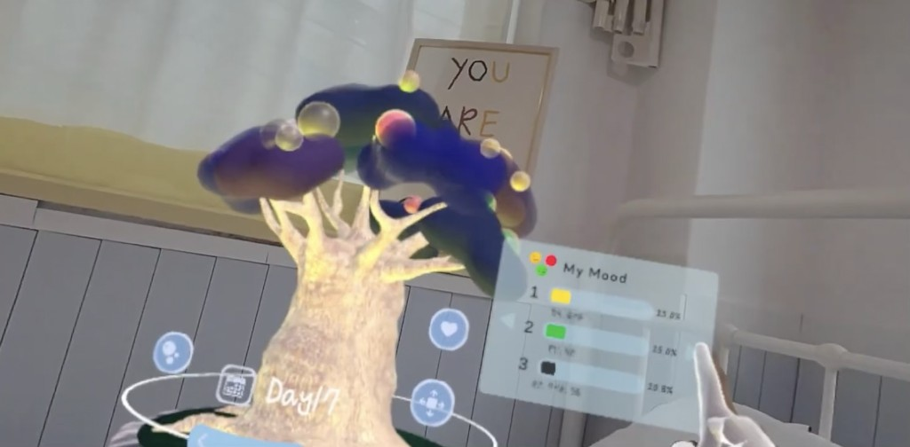

Baobab Diary is a mixed-reality mindfulness app that turns mindful journaling into an immersive pre-sleep ritual, using voice input, AI feedback, and biometric data to help users reflect on their emotions in the present moment.
The app transforms daily self-reflection into a spatial experience. Users answer evening questions, record emotions through interaction with a Baobab tree, and receive adaptive AI feedback, encouraging emotional regulation, pattern recognition, and a shift of focus from past or future anxiety to the present self.
South Korea has the highest suicide rate among OECD countries, with stress identified as a major contributing factor. Many people suppress their emotions, lacking time and space for self-reflection, and mental health deteriorates quietly as a result.
We saw the need for an accessible, universally applicable MR app that helps users manage stress and emotions through meaningful interaction and guided reflection, especially before you sleep, when the mind tends to replay the day or worry about tomorrow.
Concept
Baobab Diary provides a calm MR space for users to objectively observe and organise their emotions before sleep. Through mindful journaling reframed as spatial play, users are guided to focus on the present, fostering emotional health and maturity rather than rumination.
The experience draws on mind diary (마음일기), first developed in 2009 by Won Buddhism and Jungto Society teachers as a way to apply Buddhist awareness, expression, and empathy in the classroom. Rather than judging or analysing feelings, the flow invites users to accept emotions as they are, with Seed offering companionship along the way.
Passthrough MR blends the user's real room with a night-sky atmosphere. Hand tracking, voice input, and real-time heart rate data combine with OpenAI-powered feedback to create an experience that feels personal, responsive, and gently supportive.
Experience Flow
The Namuhak team shaped the journey around core questions from event → thought → emotion → action → result, helping users record a day's feelings and experiences without judgment, and adding empathy and connection through Seed rather than cold analysis.
1. Start meditation
Before sharing emotions, users begin with a breathing meditation to settle into the present. Real-time heart rate is visible throughout via the HypeRate plugin. If they are not ready to move on, they can meditate again until they feel grounded.
2. Meet your virtual friend, Seed
Seed appears as a companion for the mindfulness journey, a character who reflects the user's inner world and grows through continued interaction. Users can interact with Seed directly, building a sense of emotional bond before the journaling ritual begins.
3. Begin the mindfulness journey
Invited inside an emotion fruit with Seed, users move through four guided questions inspired by mind-diary practice:
Q1 · Event
What stuck with you most today?
Q2 · Emotion
What was your true feeling then?
Choose from eight emotions (happiness, anxiety, sadness, warmth, anger, envy, comfort, and more) and set intensity. The fruit's opacity shifts to match.
Q3 · Action
How did you react?
Q4 · Reflection
Looking back now, how do you feel?
Voice is transcribed through Whisper API; GPT responds with live, personalised feedback. The focus stays on noticing and accepting, not fixing.
4. Hang the fruit on the Baobab tree
When the journey ends, the emotion fruit is hung on the Baobab tree, a guardian that keeps every feeling safe in the virtual world. Users can return later to listen to saved audio, read transcripts, poke fruits to make them glow, and open healing messages from Seed. Immersive meditation and ASMR backgrounds support quiet revisiting whenever needed.

5. Review patterns with AI feedback
Over time, saved fruits build into a personal emotional archive. My Mood shows an objective breakdown of what the user has logged: which emotions appeared most often and at what intensity, displayed as simple percentages. Mood Feedback offers optional reflective prompts and general wellness suggestions based on those recorded patterns, not a clinical assessment. We designed this feature carefully, keeping outputs factual and supportive rather than interpretive.
System Design
The app connects spatial MR interaction, AI processing, and biometric feedback into a single evening reflection loop.
Evening reflection pipeline
Breathing Meditation→Meet Seed→4 Mind-Diary Questions→Emotion Visualised as Fruit→Saved on Baobab Tree
Each session records three types of data the user provides directly: the emotion type they select, its intensity on a three-point scale (shallow, normal, or deep, reflected in fruit opacity), and their spoken responses transcribed via Whisper API. The system does not infer hidden psychological states. It aggregates what was logged into a My Mood view (frequency and distribution over time) and optional Mood Feedback text that mirrors those entries with gentle, non-clinical suggestions.
Because the app touches mental wellbeing, we treated AI outputs with caution: no diagnostic labels, no claims of treatment, and no replacement for professional support. The goal was to help users notice their own patterns through clear, objective indicators they had already chosen to record.
Core Features
1. The Baobab Tree
Users interact with the Baobab tree to record emotions, stored as fruits. Over time, those entries can be reviewed as a simple visual summary of what they logged.
2. Mindfulness Journey with Seed
Four mind-diary questions guide users from today's memory through true feeling, reaction, and reflection, with Seed as a companion inside the emotion fruit and GPT offering live, empathetic responses.
3. Emotion Exploration through Fruits
Fruits hang on the Baobab tree by day, coloured by dominant emotion. Users revisit saved audio and transcripts, receive healing messages from Seed, and unwind with meditation and ASMR backgrounds.
4. AI Emotion Summary & Feedback
My Mood turns saved fruits into objective indicators only: which emotions the user recorded most often, and how frequently each appeared. Mood Feedback adds optional, lightly worded reflection prompts and general wellness ideas based on that same self-reported data. We were deliberate about keeping this non-clinical, factual, and supportive, without presenting the app as a substitute for professional mental health care.